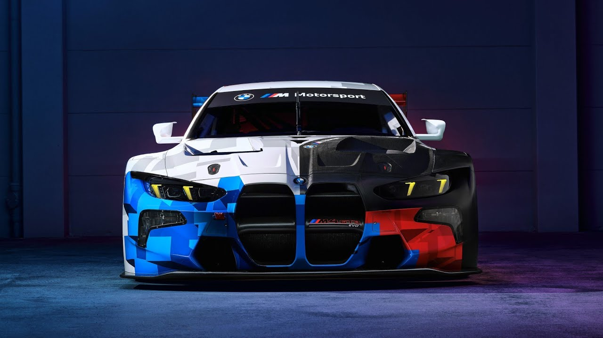

The BMW M4 GT3 EVO is the latest evolution GT race car designed for the 2025 season, focusing on improved drivability, aerodynamic efficiency, and ease of service for customer teams. Featuring a 3.0L twin-turbo inline-6 engine producing up to 590 hp, the car sports new headlights, smaller mirrors, and an improved chassis setup to reduce tire wear.
The world of motor sports is an exciting one, characterized by pure action, pulsing adrenaline and unconditional passion. The BMW M Motorsport racing programme and numerous outings in worldwide motorsport teams around the BMW M Hybrid V8, the BMW M4 GT3 EVO, and the BMW M4 GT4 EVO embody the essence of BMW M: maximum dynamics and the highest level of engineering from Munich. Every day, here in the home of BMW M Motorsport, the engineers work on the continuation of that success story. With the new entry-level model BMW M2 Racing, the next generation is already on the line.

BMW M Motorsport: High performance and excellent service. Are you a motorsport enthusiast or already active in motorsport? Then you too can become part of the BMW M Motorsport family! With the automobiles from BMW M Motorsport, both beginners and competitive drivers can successfully compete in races all over the world. The teams and drivers additionally benefit from the excellent customer service, which ranges from parts supply to on-site support at the racetrack.